import sys
sys.path.append(r"..\..\src")
import numpy as np
from matplotlib import pyplot as pltTime Series Generation
This tutorial covers the generation of time series signals. It is shown how to create linear interpolated signals and periodic signals (superimposing several frequencies).
1 Linear Signals
Linear interpolated time series signals can be created by specifying points in time t and the corresponding values y:
from trimes.signal_generation import linear_time_series
t = (0, 2, 2, 3, 5)
y = (2, 2, 1.5, 1.2, 1.2)
sample_time = 1e-3
ts = linear_time_series(t, y, sample_time)
ts.plot(grid=True)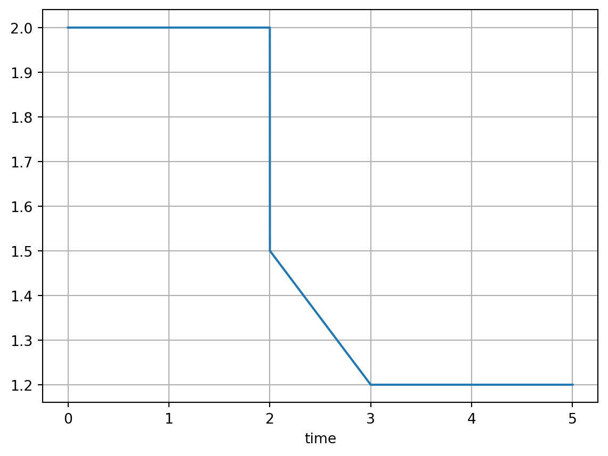
If y is a list, several lines are generated:
t = (0, 2, 2, 3, 5)
y = [(2, 2, 1.5, 1.2, 1.2), (0, 1, 1, 1, 1)]
ts = linear_time_series(t, y, sample_time)
ts.columns = ("upper boundary", "lower boundary")
ts.plot(grid=True)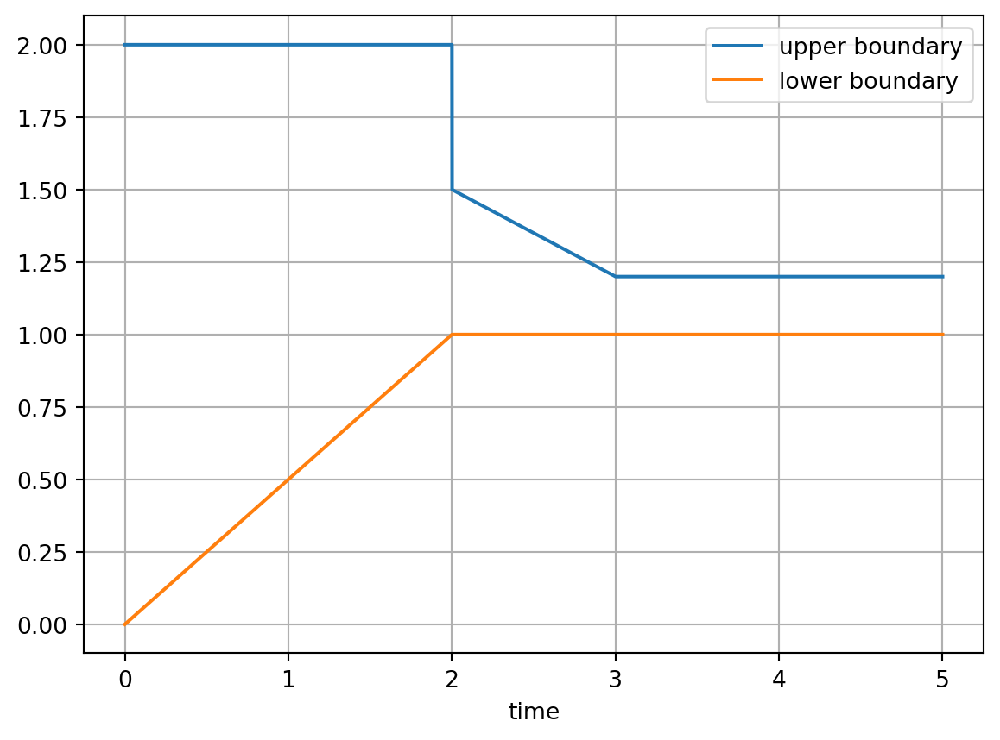
Symmetric signals can also be created using mirror_y (mirroring of the signal at a y-value):
from trimes.signal_generation import mirror_y
upper_boundary = ts.iloc[:, 0]
ts_envelope = mirror_y(upper_boundary, 1, inplace=True)
ts_envelope.columns = ("upper boundary", "lower boundary")
a = ts_envelope.plot(grid=True)
type(a)matplotlib.axes._axes.Axes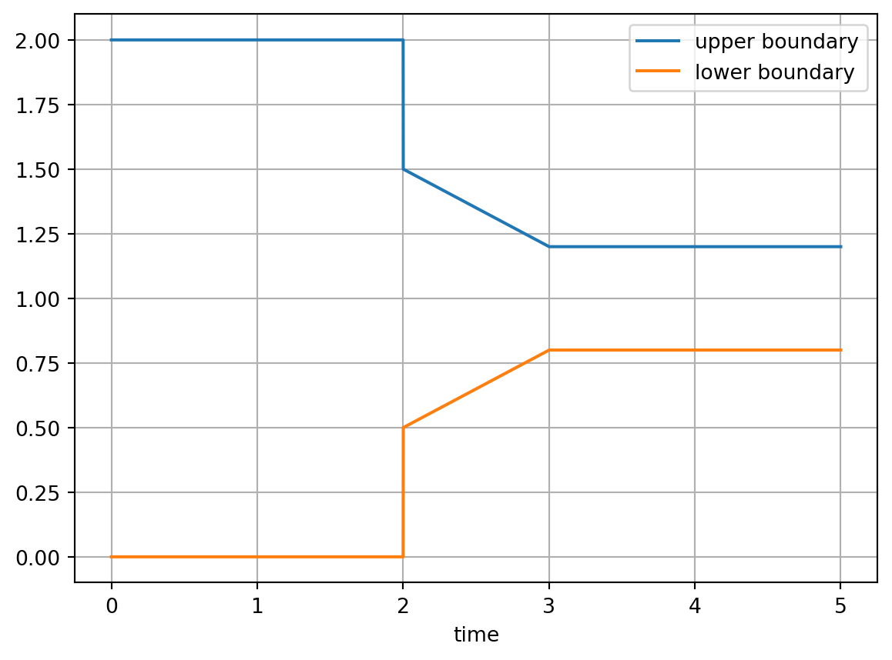
2 Periodic Signals
The PeriodicSignal class can be used to create periodic signals of any shape (flexibly set parameters like frequency, magnitude, offset and initial angle). By default, cosine signals are created:
from trimes.signal_generation import PeriodicSignal
sample_time = 1e-4
mag = 110 * np.sqrt(2) / np.sqrt(3)
t = np.arange(0, 0.1, sample_time)
cosine_wave = PeriodicSignal(t, f=50, mag=mag, offset=10, phi=np.pi * 0.3)
cosine_wave_series = cosine_wave.get_signal_series()
cosine_wave_series.plot()
plt.grid()
plt.show()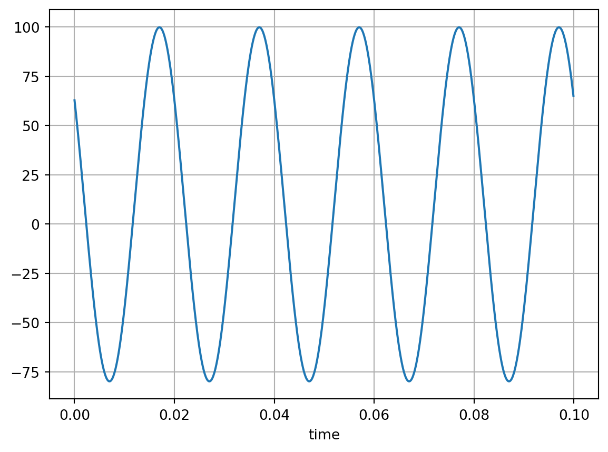
To create gradients, use tuples as parameters (don’t use lists).
plt.close("all")
cosine_wave = PeriodicSignal(
np.arange(0, 0.1, sample_time), f=(50, 150), mag=(0.9 * mag, 1.5 * mag)
)
cosine_wave.plot(grid=True)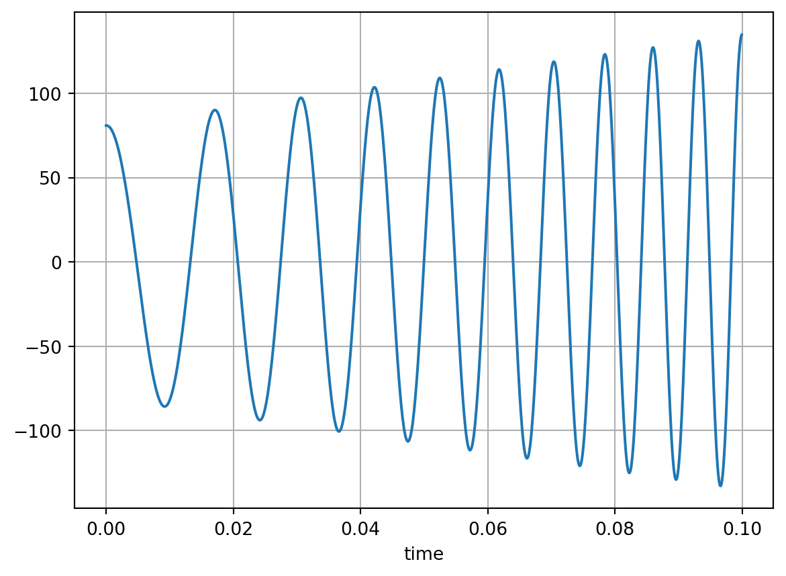
The plot_with_attributes illustrates the signal as well as its parameters over time.
cosine_wave.plot_with_attributes()
plt.grid()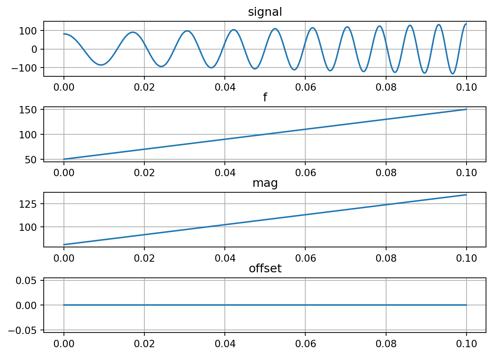
Symmetric multi-phase signals can be created based on the PeriodicSignal class by using get_signal_n_phases (angular phase difference between signals is \(360/n\)):
cosine_wave = PeriodicSignal(
np.arange(0, 0.1, sample_time), f=(50, 55), mag=(0.9 * mag, 1.1 * mag)
)
cosine_wave_series_3_phase = cosine_wave.get_signal_n_phases(3)
cosine_wave_series_3_phase.plot(grid=True)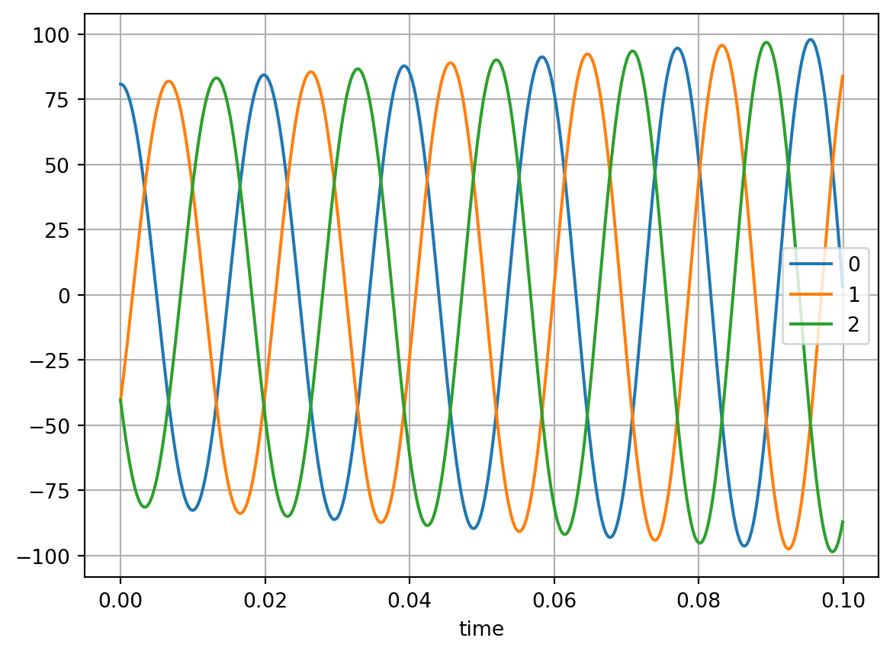
Signals can be superimposed and concatenated by creating an array of signals. The rows of the array are superimposed and the resulting column is concatenated. The following signal is created: - two time periods (with varying frequencies) - 0-0.1 s - 0.1-0.2 s - several frequencies are superimposed: - fundamental: \(50\) Hz (actually varies between \(50\) and \(52\) Hz) - fifth harmonic: \(5*50=250\) Hz - negative sequence: rotating with \(-50\) Hz (actually varies between \(-50\) and \(-52\) Hz) - \(3\) phases
from trimes.signal_generation import (
superimpose_and_concat_periodic_signals,
)
time_spans = [np.arange(0, 0.1, sample_time), np.arange(0.1, 0.2, sample_time)]
signals = [
[
PeriodicSignal(time_spans[0], f=50, mag=mag),
PeriodicSignal(time_spans[0], f=5 * 50, mag=0.05 * mag),
PeriodicSignal(time_spans[0], f=-50, mag=0.03 * mag),
],
[
PeriodicSignal(time_spans[1], f=(50, 52), mag=mag),
PeriodicSignal(time_spans[1], f=(50 * 5, 52 * 5), mag=0.05 * mag),
PeriodicSignal(time_spans[1], f=(-50, -52), mag=0.03 * mag),
],
]
res = superimpose_and_concat_periodic_signals(
signals, angle_continuation=True, num_phases=3
)
res.plot()
plt.grid()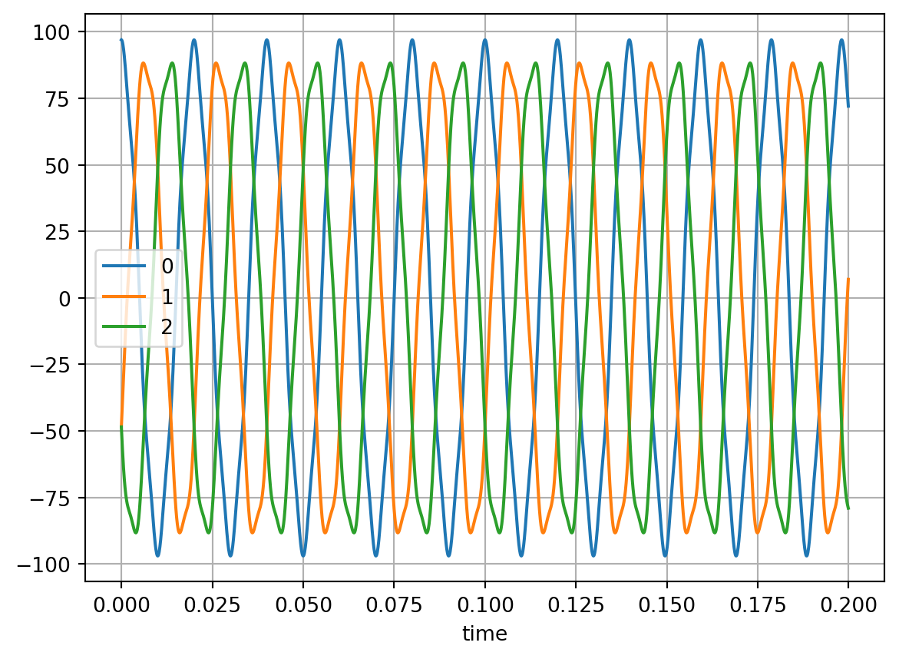
The parameters of the signals can be exctracted using get_attributes_of_superimposed_and_concatenated_signals_over_time and illustrated:
from trimes.signal_generation import (
get_attributes_of_superimposed_and_concatenated_signals_over_time,
)
attrs_of_columns = get_attributes_of_superimposed_and_concatenated_signals_over_time(
signals
)
attrs_of_columns[0].plot(title="fundamental")
plt.grid()
attrs_of_columns[1].plot(title="harmonic")
plt.grid()
attrs_of_columns[2].plot(title="negative sequence")
plt.grid()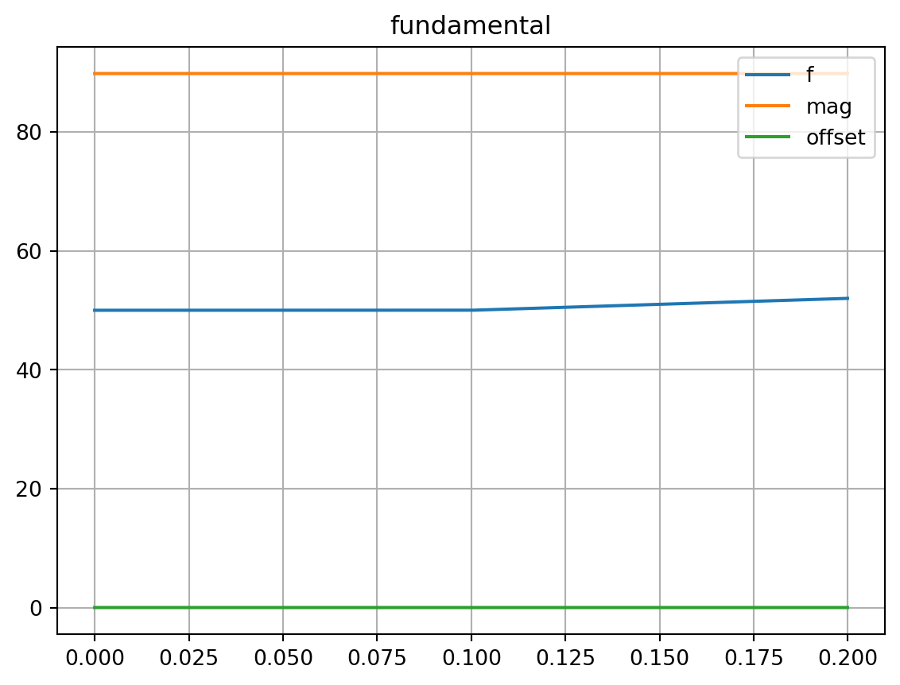
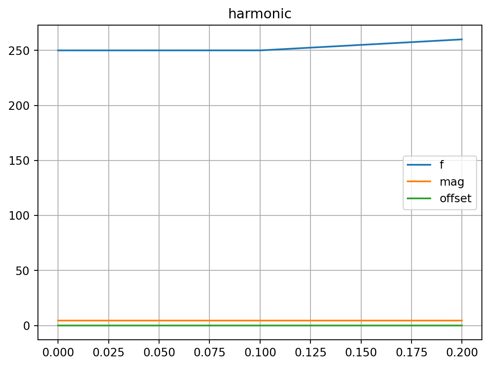
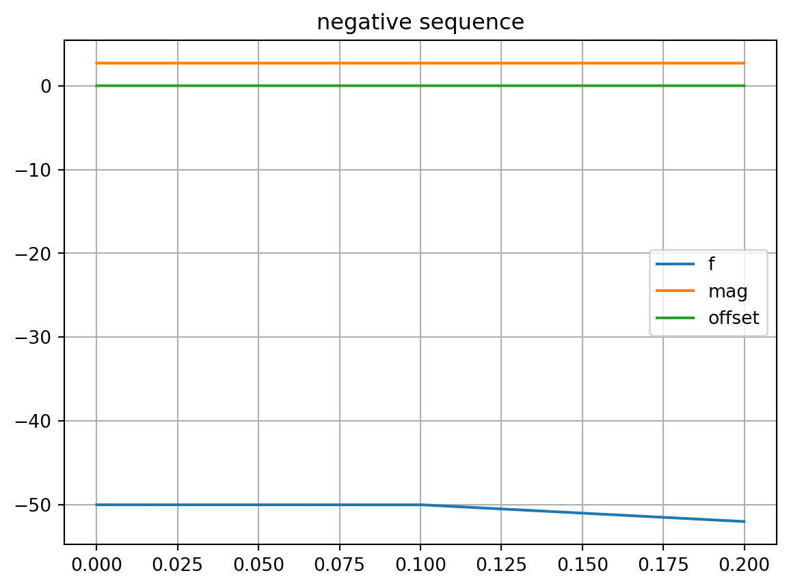